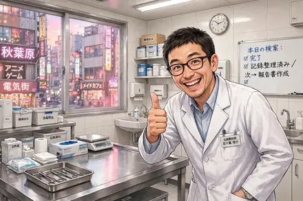

第1話・全10章・完結
解剖医？五十嵐俊介
法医解剖医コメディ ・ 約9,136字
法医解剖医・五十嵐俊介は、解剖中に遺体の過去が映像となって見える力を持つ。今日も法医学教室に一体の遺体が運ばれてくる。若い女性の死に、映像は何を見せるのか。
第1章 こう見えて、解剖医
五十嵐俊介、四十歳。こう見えて、死んだ人間を解剖する仕事をしている。
法医解剖医。大学の法医学教室に勤め、警察に頼まれて、事件性の疑われる遺体を開くのが商売である。法医学教室——医学部では、教授を頂点とする研究部門のことを、仰々しくこう呼ぶ。白衣の下はたいていヨレヨレのTシャツで、出勤してくる姿はどう見ても医者というより、夜勤明けのコンビニ店員に近い。
「先生、おはようございます。今日は珍しく遅刻してませんね」
事務の会田麻衣が、受付の向こうから言った。二十六歳。入って三年になるが、俊介の扱いだけはもうベテランの域に達している。
「麻衣ちゃん、人はね、遅刻しないのが普通なんだよ。それをいちいち褒めるのは、期待値が低すぎる」
「褒めてないです。観察報告です」
「冷たいなあ。ねえ、それよりさ」
俊介は白衣のポケットから飴を取り出して、ひとつ放り投げた。
「早く人員補充してくださいよ。教授に言っといて。俺の有給、去年から一度も消化してないんですけど」
「その台詞、今年四回目です。教授からは『五十嵐には伝えてある』って返事しか来ません」
「伝わってないから俺がここで麻衣ちゃんに言ってるわけで」
主任教授の郷田正樹は、医局の奥の自室から顔も出さなかった。六十四歳。俊介のことは誰よりも買っている。「あれは天才だ」が口癖で、学会で俊介の名が出るたびに、自分のことのように胸を張る。だが人員補充の話になると、途端に耳が遠くなるのだった。
正直に言えば、俊介はこの仕事が嫌いだった。正確には、嫌いだと思い込むようにしていた。遺体は臭うし、重いし、夏場は悲惨の一言に尽きる。何より、死んだ人間の数だけ、死ななければならなかった理由を考えさせられるのが重かった。だから彼は騒ぐ。ふざける。解剖室の前でダジャレを言い、麻衣に呆れられ、学生に笑われる。それが彼の、死と付き合うための流儀だった。
夕方、俊介は秋葉原にいた。コンセプトカフェ「きゅんとぴあ」。週に二度は通う、彼のもうひとつの職場のような場所である。
「俊介さん、今日もお仕事お疲れさまー！」
「お疲れー。今日はね、特別な日なんだ。解剖が一件、無事終わった」
「何それ、縁起でもないお祝いー」
キャストの女の子たちとグラスを掲げる。店内の全員で声を合わせるのが、この店のお約束だった。
「せーの、萌えチャージ完了！ カンパーイ！」
バツイチ、小学三年生の娘は元妻の元にいる。月に一度の面会の日は、娘の前でだけは真人間になる。だが普段の彼は、こんな男だった。天才と呼ばれる腕を持ちながら、その腕を振るう場所から一番遠くにいたがる男だった。
その夜遅く、教室の電話が鳴った。警察からの依頼だった。俊介の休日は、またひとつ消えた。
第2章 白川綾乃
運ばれてきた遺体の名を聞いて、俊介は珍しく背筋を伸ばした。
白川綾乃、二十三歳。ファッション誌『JUNJUN』の専属モデルで、最近はテレビのバラエティにも出ている。若い女の子たちの間では、ちょっとしたカリスマだった。麻衣も表紙を飾る綾乃の顔を知っていた。
「先生、今日はえらいヤル気満々ですね」
解剖室に入る俊介の後ろ姿に、麻衣が声をかけた。いつもなら「人員補充」の歌を歌いながら、白衣の袖に腕を通すのも億劫そうな男である。それが今日は、自分から手袋を取り、照明の角度まで確かめている。
「麻衣ちゃん、誤解しないでくれ。俺は普段からヤル気がある」
「普段はどこにしまってるんですか、そのヤル気」
「今日の分は特別だ。……まあ、正直に言うと、俺、『JUNJUN』読んだことあるんだよ」
「四十歳のおじさんが」
「娘が将来読みたいって言うかもしれんだろ。予習だ」
綾乃は前日の深夜、自宅マンションのリビングで倒れているのを、訪ねてきたマネージャーに発見された。第一報は自殺の可能性だった。多忙を極めるスケジュール、ベッド脇にあった睡眠導入剤、そして心身の不調を匂わせる週刊誌の記事。世間はすでに「人気モデルの自殺」という物語を受け入れる準備を終えつつあった。
だが、郷田の表情は硬かった。
「五十嵐、頸部を見ろ」
遺体の首筋には、うっすらとだが、指の痕のような内出血があった。絞められた痕にしては弱く、位置もおかしい。だが「自殺」という前提の前では、誰もが目を逸らしたくなる種類の痕だった。
「先生は、自殺じゃないと」
「分からん。だが、これは警察も引っかかってる。だから司法解剖になった。……五十嵐」
郷田は珍しく真顔で言った。
「お前の出番だ、ということだ」
俊介はしばらく、眠っているようにしか見えない綾乃の顔を見つめていた。テレビで笑っていた顔と、同じ顔だった。違うのは、もう二度と笑わないということだけだった。
「分かりました。……やりましょう」
俊介が解剖台の前に立った瞬間、解剖室の空気が変わった。麻衣は後にも先にも、この瞬間だけは俊介をからかえなかった。
第3章 神の解剖
俊介の解剖は、最初の一刀から違った。
メスが皮膚に触れる直前、彼の視界の端で、解剖室の照明が一段強く灯ったように見えた。実際には何も変わっていない。だが麻衣は知っていた。この光の変化を感じるのは俊介だけだということを。そして、これが始まる時の顔を、学生時代からの付き合いの郷田は「スイッチが入った」と表現した。
俊介の手が、迷いなく動いた。速いのではない。無駄がないのだ。開かれた体の内側を、彼は地図を読むように読み解いていった。心臓、肺、肝臓。臓器の一つひとつが、綾乃の二十三年を静かに語っていた。
そして、映像が降りてきた。
――ホテルのラウンジ。綾乃が、年配の男と向かい合って笑っている。事務所のプロデューサー。男の手が、テーブルの下で綾乃の膝に触れる。綾乃の笑顔は、テレビで見るあの笑顔とは違う種類のものだった。受け入れた笑顔だった。
――楽屋の隅。テレビ局のプロデューサーが、綾乃の耳元で何か囁く。綾乃の肩が、小さく震える。断りたいのに断れない人間の、あの震えだった。
――深夜のパーティ会場。若いモデルたちが騒いでいる。テーブルの上に、白い粉の小袋。綾乃は笑いながら首を振り、席を立った。「あたしはいい。帰る」。
映像は鮮明で、しかし断片だった。順序も、因果も教えてはくれない。それは俊介の才能の、公平なところだった。見えるものは全部本当のこと。だが、それが死とどうつながるのかは、神様でも教えてはくれなかった。
「……なるほどな」
俊介はつぶやいた。首筋の内出血は、絞め痕ではなかった。何か重いものが一瞬だけ乗り、その後にずれたような、奇妙な圧の痕だった。胃の内容物はほとんど消化が進んでいない。最後の食事から、死まではそう長くなかった。
解剖室を出ると、俊介は郷田に言った。
「先生。この子は、とんでもない闇の中にいましたよ。不倫に枕営業に薬物。……誰かに殺されてもおかしくなかった」
「お前も他殺だと思うか」
「思います。思い切り思います。でも」
俊介は首を振った。
「体の方が、まだ何も言ってない。死因が、まだ決まってないんです」
天才と呼ばれる男の、本当の天才はここだった。降りてきた映像に飛びつかないこと。事実の側が口を開くまで、結論を出さないことだった。
第4章 違和感
検査結果は、俊介の「思い切り思う」他殺説を、容赦なく削っていった。
血液から検出されたのは、アルコールと、処方された睡眠導入剤の治療量のみだった。違法薬物はゼロ。あのパーティの白い粉は、綾乃の体には一欠片も入っていなかった。睡眠導入剤も、大量服薬の痕跡はなかった。シートの残りは処方日数とぴったり合っていた。自殺の線は、この時点で細くなっていた。
「じゃあ、先生、本当に殺されたんですか」
麻衣が、報告書のドラフトを抱えて聞いた。
「だから分からんって。……麻衣ちゃん、他に変なとこなかったか。所見、全部言ってみて」
「頸部の内出血、原因不明。背中と脇腹に薄い打撲痕。胃の中はコンビニの肉まんとサラダ。最終食事から死亡まで推定一時間以内。肺に軽い浮腫」
「なあ」
俊介は椅子の背に体重を預けた。
「全部が、事件の顔をしてないんだよ。事件の遺体は、所見が一列に並ぶ。誰かに向かって『こっちを見ろ』って並ぶ。でもこの子の所見は、みんな別々の方向を向いて、ぼそぼそ喋ってる」
その晩、俊介はもう一度だけ解剖記録と向き合った。降りてこない映像を、無理に呼ぶことはできない。できるのは、事実を並べ直すことだけだった。
頸部の圧痕。重いものが一瞬乗って、ずれた痕。
背中の打撲痕。何かにぶつかったか、倒れたか。
胃の中の肉まん。食べ終えてすぐ。
並べ直した事実は、やがてひとつの姿を結び始めた。誰かが綾乃の上に乗ったのではない。綾乃自身が、何かの下敷きになるような倒れ方をしたのだ。ソファにもたれ、意識を失い、体がずり落ちて、自分の体重と家具の角の間に、首筋を挟んだ。その形が、圧痕として残った。
「……そうか。そうなのか、綾乃」
俊介は立ち上がった。もう一度、確かめるべき場所があった。気道だった。最初の解剖で見たはずの場所を、彼は結論ありきで見ていたのかもしれなかった。
翌朝、郷田が医局に入ると、俊介はすでに白衣を着ていた。
「教授。人員補充も大事ですが、今日はもう一件、俺に付き合ってください」
「珍しいな。お前から仕事を頼むとは」
「白川綾乃です。俺、まだこの子に聞かなきゃいけないことがあります」
第5章 地味な事実
再検査の結果は、あっけないほど地味だった。
綾乃の気道の奥に、咀嚼しきれていない肉まんの欠片が残っていた。深い泥酔と、治療量とはいえ睡眠導入剤の作用、そして何日も続いた収録の疲労。嚥下の反射が鈍っていた体で、ソファに倒れ込むように眠り、食べかけのものが気道に入った。静かな、音もない窒息だった。
背中の打撲痕は、帰宅時に玄関の段差で転んだものと、現場の防犯カメラの映像が裏付けた。頸部の圧痕は、倒れた後に体がずり落ち、ソファの肘掛けと自身の体重に挟まれた痕だった。
「事故死、ですか」
警察の捜査員が、念を押すように聞いた。医局には俊介と郷田がいた。
「事故死です。少なくとも、この体に他殺の署名はない。自殺の署名もない」
「しかし、彼女の周囲には色々な……」
「分かってます。俺も最初は他殺だと思い切り思った」
俊介は正直に言った。
「あの子の周りには、本当に闇がありました。不倫も、枕の話も、薬物も。全部、本当にあったことです。でも、それはあの子の『生』の問題で、『死』の問題じゃなかった。死んだ理由は、疲れて、酔って、眠くて、食べ物を喉に詰めた。それだけです」
捜査員は複雑な顔で帰っていった。
その日の夕方、俊介は解剖室に一人残り、空の解剖台に手を置いた。
「……なあ、綾乃。死に方ってのは、生き方と無関係なんだな」
華やかな世界の真ん中で、誰もが羨む笑顔で立っていた二十三歳の死に様は、驚くほど普通で、拍子抜けするほど地味だった。だが俊介は知っていた。事実とはたいてい、そういう顔をしている。物語になりたがるのは、いつも生きている側の人間だった。
「先生、帰らないんですか」
麻衣が顔を出した。
「帰る帰る。今日はきゅんとぴあが俺を待っている」
「あのですね、先生。その前に、これ見てください」
麻衣の差し出したスマートフォンには、ニュースの見出しが並んでいた。
――白川綾乃さん急死、警察は「事件性なし」の方向。ネットでは疑問の声
――所属事務所、コメント発表を延期
――「本当に事故なのか」ファンの追悼アカウント、情報提供を呼びかけ
俊介は眉をひそめた。
「……なんか、嫌な予感がする」
第6章 騒ぎ
予感は的中した。
週刊誌は「カリスマモデル急死の闇」と題して、綾乃とプロデューサーの密会写真を載せた。SNSでは自殺説、他殺説、薬物中毒死説が入り乱れ、断片的な情報が勝手に接着剤でつなぎ合わされて、日ごとに巨大な物語に育っていった。事務所の沈黙は「隠蔽」と読まれ、警察の「事件性なし」は「揉み消し」と読まれた。
何より厄介だったのは、疑惑の矢印が解剖そのものに向けられたことだった。
「本当にちゃんと解剖したのか」
「解剖医は誰だ。名前も出ていない」
「権力に忖度した結論ではないのか」
大学にも抗議の電話が入り始めた。
「教授、連日すみません」
俊介は珍しく神妙に頭を下げた。郷田は大きなため息をついた。
「お前のせいではない。……だが、このままではいかんそうだ。警察と大学で協議があってな」
「会見ですか」
「解剖医本人が、所見を説明する。異例だが、それしか収拾の方法がないと」
「やだ」
即答だった。
「俺、そういうの絶対やだ。だって俺が前に出たら、絶対ロクなことにならない。教授だって分かってるでしょう。俺、真面目な場で真面目に喋れないんです」
「五十嵐」
郷田の声が低くなった。
「お前がしないと収拾がつかん、と上は言っている。……それに、私もそう思う。あの子の死を一番近くで見たのはお前だ。事実を喋れるのは、お前しかいない」
沈黙が落ちた。俊介は天井を見上げ、やがて小さく笑った。
「……分かりました。やります。でも条件があります」
「なんだ」
「終わったら、有給をください。あと人員補充、真剣に検討してください」
「会見が終わってから話そう」
「またそれかよ！」
会見の日取りは三日後に決まった。麻衣がネクタイを持ってきた。
「先生、これ、つけていってください。せめて見た目だけでも真人間に」
「麻衣ちゃん、俺は中身も大概真人間だよ」
「本番でふざけたら、承知しませんよ」
俊介はネクタイを受け取り、鏡の前で結んでみた。どうやっても、解剖医というより、娘の授業参観に初めて行く父親の顔になった。
第7章 記者会見
記者会見は、大学の大講義室で行われた。テレビカメラが六台、記者は壁際まで詰めかけていた。壇上に座る俊介の横には郷田が控え、その顔は解剖の時より険しかった。
「法医学教室の、五十嵐俊介と申します。こう見えて、解剖医です」
第一声から、会場の空気が微妙に揺れた。郷田が目を閉じた。
それでも、所見の説明そのものは見事だった。俊介は記者の質問に、専門用語をその場で噛み砕き、首筋の圧痕の成り立ちをホワイトボードに描いて説明し、「なぜ他殺ではないと言い切れるのか」を、事実の積み重ねでひとつずつ示した。薬物の検査方法、睡眠導入剤の検出量、誤嚥の医学的な仕組み。時折混じる冗談は、むしろ会場の緊張をほぐしていた。若い記者の中には、感心したようにうなずく者もいた。
質疑は一時間に及んだ。最後の質問が終わり、司会が締めようとした、その時だった。
「……あの、最後に。白川綾乃さんのファンの皆さんに、一言お願いできますか」
俊介は少し考え、それから彼らしい、柔らかい顔で言った。
「あの子は、最期まで一生懸命生きてました。疲れてるのに、誰にも弱音を吐かなかった。だから、彼女の死を、面白おかしい物語にしないでください。事実は地味です。でも、その地味な事実の中に、彼女の二十三年があります」
会場が静まった。いい会見だった。誰もがそう思った。思ってしまった。
司会が「会見は以上です」と告げ、記者たちが椅子を引いて立ち上がりかけた、その時だった。後方の若い記者が、半ば笑いながら声を張り上げた。
「五十嵐さん！ 先生はコンカフェに通っているという噂がありますが、本当ですか」
真面目な時間は終わった。そう感じた瞬間、俊介の体から力が抜け、彼はいつもの顔に戻った。
「本当ですよ。週に二回」
会場に、どっと笑いが起きた。
「そこの店の乾杯は、みんなでやるのがお約束でしてね。じゃあ、せっかくだから皆さんも一緒に。せーの、萌えチャージ完了！ カンパーイ！」
フラッシュが一斉に焚かれた。郷田が壇上でゆっくりと額を押さえた。麻衣は控室のモニターの前で、声にならない悲鳴を上げた。
その夜のニュースの見出しは、所見の内容ではなく、こうなった。
――解剖医、会見で「萌えチャージ」。不謹慎の声、殺到
第8章 謝罪
炎上は、俊介の想像をはるかに超えて燃え広がった。
会見の動画は切り取られ、拡散され、「死者を冒涜する解剖医」という札を貼られて独り歩きを始めた。彼が一時間をかけて積み上げた所見の説明は、誰も見ていなかった。見出しになったのは十秒の乾杯コールだけだった。
大学には抗議が殺到し、三日後、郷田が謝罪会見を開くことになった。
「このたびは、当教室の五十嵐の不適切な発言により、ご遺族をはじめ、白川綾乃さんを愛する多くの方々のお気持ちを傷つけましたことを、深くお詫び申し上げます」
深々と頭を下げる郷田の映像を、俊介は医局のテレビで見ていた。隣では麻衣が、珍しく何も言わずに立っていた。
「……教授にまで、あんな思いをさせてさ」
「先生」
「俺、本当にダメだな。解剖台の前では天才だなんて言われてもさ、人前ではこのザマだ。死んだ人間のことは分かっても、生きてる人間の気持ちは、まるで分かってない」
麻衣はしばらく黙って、それから小さな声で言った。
「先生の解剖で救われた人、たくさんいますよ。ご遺族とか。……会見の言葉だって、本当はいい言葉だったのに」
「ありがとう。でも今は、そういうの、全部届かないんだ」
その週、俊介はきゅんとぴあにも行かなかった。店の前まで行って、看板の灯りを見上げ、踵を返したことが二度あった。推しのキャストが心配して送ってきたメッセージにも、返信は一言だけだった。
元妻からも電話があった。娘がテレビを見たらしい。
「パパ、大丈夫」
電話口の小さな声に、俊介は笑って答えた。
「大丈夫だよ。パパはね、強いんだ」
受話器を置いてから、彼はしばらく、動けなかった。
風向きが変わり始めたのは、週末だった。
第9章 正体
始まりは、一本の投稿だった。
「あの解剖医、五十嵐俊介って、まさかと思うけど、十年前にうちの県で起きた連続不審死事件の、あの時の先生じゃないのか」
元捜査員を名乗るアカウントの投稿に、火がついた。あの事件では、当初は病死とされた複数の遺体を、一人の法医解剖医が「全部、同じ手口の毒殺だ」と見抜き、真犯人の逮捕に至った。その解剖医の名は、報道では伏せられていた。だが現場にいた人間は覚えていた。
掘り起こしは止まらなかった。
――有名俳優の急死を、薬物の過量摂取ではなく持病の悪化と証明し、遺族への保険金支払いを実現させた解剖医
――虐待を疑われた母親の無実を、子供の遺体の所見から証明した解剖医
――「あの事件も」「この事件も」
SNSのタイムラインは数日で色を変えた。
「この人、ふざけてるけど、実はとんでもない天才だった」
「何千体も解剖してきた腕は本物」
「会見、全部見た。所見の説明は完璧だった。切ったのはメディアの方だ」
綾乃の死についても、空気が変わっていった。週刊誌が「カリスマモデルの闇」を煽り続ける一方で、「事故は事故として受け止めよう」「彼女の死を物語にするな」という、俊介自身の言葉を引用する声が広がっていった。
「先生、見てください。すごいことになってます」
麻衣がタブレットを差し出した。俊介は画面を一瞥して、興味なさそうに飴を舐めた。
「手のひら返しってやつだな。……あのさ、麻衣ちゃん。世間の評価なんて、こんなもんだよ。事実の側は、一ミリも動いてない。動いたのは、物語の好みだけだ」
「悔しくないんですか」
「悔しいさ。教授に頭下げさせたのは、今でも悔しい」
俊介は笑った。
「でもまあ、死んだ人間は評価を気にしない。俺も見習うよ」
だが、世間の「物語」は、もうひとつだけ仕上げを必要としていた。俊介がいくら天才でも、それはSNSの中の噂話に過ぎなかった。事実に公の保証を与える声が、まだ残っていた。
第10章 保証
大槻源一郎が姿を見せたのは、日本法医学会の理事会の後の囲み取材だった。
七十九歳。郷田の師匠であり、法医学界の重鎮として誰もが一目置く存在である。その大槻が、記者のマイクの前でゆっくりと口を開いた。
「白川綾乃さんの解剖所見について、私も資料に目を通しました。結論から言います。五十嵐俊介の見解は正しい。頸部の圧痕の読み方、薬物検査の解釈、誤嚥の判断。どれも、法医学の正道に則った、正確な仕事です」
記者がざわめいた。
「彼を指導した郷田君から、私は昔、こう頼まれました。『先生の名を汚すような男なら、私が責任を持って辞めさせます』と。……あの男は不真面目です。ふざけています。学会の懇親会でも乾杯の音頭ばかり取っています」
大槻はそこで、かすかに笑った。
「だが、解剖台の前では、誰よりも死者に対して真面目です。私はそれを知っている。五十年、この世界で見てきましたが、あれほどの腕と目を持つ解剖医は、滅多にいません」
その言葉が報道されると、騒ぎはうそのように収束へ向かった。週刊誌の次の号では、綾乃の「闇」特集は小さな訂正記事に場所を譲った。不倫も、枕営業の圧力も、薬物のパーティも、事実は事実として存在し続けたが、それが綾乃を殺したのではないという一点だけが、ようやく世間に届いたのだった。
数日後の夕方。俊介はいつものように白衣を脱ぎかけ、麻衣に言った。
「じゃ、俺、帰るわ。今日は大事な用がある」
「きゅんとぴあ、ですね」
「おう。店の子らに心配かけたからな。今日は奮発して、シャンパンでも入れるか」
その時、医局のドアが開き、郷田が入ってきた。
「五十嵐。人員補充の件だが」
「教授！」
俊介は飛びつくように振り返った。
「来年度の予算で、一名の増員が認められた。……それと、お前の有給だ。来月、まとめて取れ」
「本当ですか。やった。教授、愛してます」
「気持ち悪い。……それから、ひとつ言っておく」
郷田は少しだけ照れたように目を逸らした。
「すまなかったな。お前を矢面に立てて。あの会見は、本来、私の仕事だった」
「何言ってんですか」
俊介は笑って、白衣を肩に担いだ。
「俺は解剖医ですよ。事実を喋るのは、俺の仕事です。……あ、でも会見は二度とゴメンですからね」
秋葉原のネオンが灯る頃、俊介はきゅんとぴあの前に立って、目を丸くした。店の前に、行列ができていた。
「俊介さん！ もう、先生のせいで大変だったんだよ！」
カウンターの中から、キャストが手を振った。店内は満席で、注文の声が飛び交っている。
「会見の映像がバズってから、連日こんな感じ。行列もできちゃって、大忙しで。……でも先生」
女の子は忙しくグラスを磨きながら、にっと笑った。
「ありがとう！ 先生のおかげで、店が有名になったよ」
「……俺は炎上した側なんだが」
「細かいことはいいの。今日は先生の席、特別に空けといたから」
俊介は久しぶりにグラスを掲げた。店内の全員が声を合わせた。
「せーの、萌えチャージ完了！ カンパーイ！」
天才でも、炎上した解剖医でもない。看板に釣られて入ってきた一見の客たちが、この奇妙な乾杯を面白そうに眺めていた。
― 完 ―
読んでくださって、ありがとうございます。
一言でも構いません、感想をいただけると励みになります。